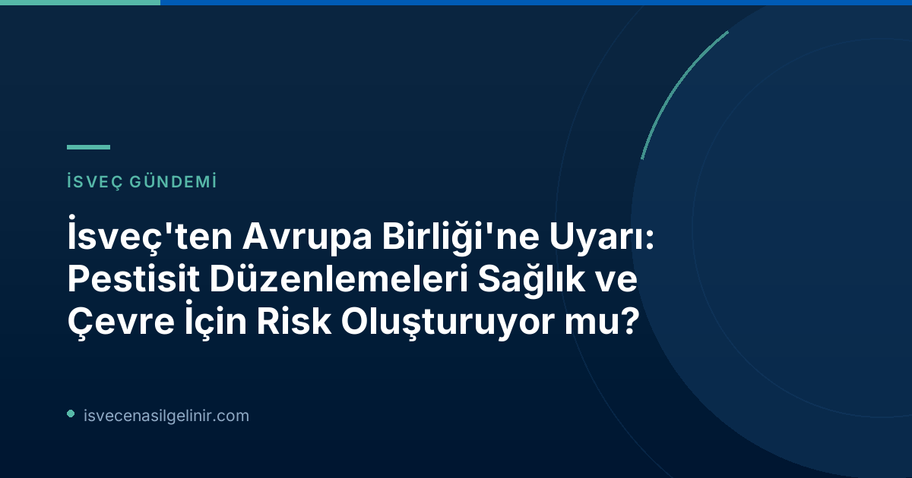

AB'nin Tartışmalı Pestisit Teklifi: Neler Değişiyor?
Avrupa Birliği Komisyonu tarafından sunulan ve 2026 yılı içerisinde onaylanması beklenen yasa tasarısı, halihazırda onaylanmış olan pestisitlerin (tarım ilaçları) yeniden değerlendirme süreçlerinden muaf tutulmasını öngörüyor. Mevcut durumda, pestisitlerin belirli aralıklarla sağlık ve çevre üzerindeki etkileri açısından tekrar gözden geçirilmesi gerekiyor. Bu yeni teklif, bu zorunluluğu ortadan kaldırarak üreticiler için bürokratik yükü hafifletmeyi hedeflese de, eleştirenler için insan sağlığı ve ekosistem üzerinde geri dönülemez riskler yaratma potansiyeli taşıyor.
İsveç'ten Yükselen Sesler: Endişeler ve Bilimsel Bulgular
Kimyasallar Kurumu'ndan Net Uyarı
İsveç Kimyasallar Kurumu (Kemikalieinspektionen), AB'nin bu teklifine karşı çıkan kurumların başında geliyor. Kurumdan Katarina Lundberg, "Bu değişiklikle birlikte sağlık ve çevre için korumanın azalma riski var" diyerek duydukları endişeyi dile getirdi. Kurum, özellikle İsveç gibi çevresel hassasiyeti yüksek ülkelerde, mevcut koruma standartlarının sürdürülmesinin hayati önem taşıdığını vurguluyor.
Stockholm Üniversitesi Araştırmacılarından Kritik Bakış
Stockholm Üniversitesi'nden araştırmacılar ve özellikle çalışmanın ortak yazarı Axel Mie, AB'nin mevcut onay sistemlerinin yeterli güvenliği sağlayamadığına inanıyor. Mie, "Şu anda pestisitler için onay sistemimizin istediğimiz güvenliği sağlayabileceğini düşünmüyorum" ifadelerini kullanarak sistemdeki temel sorunlara dikkat çekiyor.
Fluazinam Vakası: Yanlış Bilgiler ve Bilimsel İtibar
Araştırmacılar, 2008 yılında AB tarafından onaylanan ve bir bitki koruma ürünü olan Fluazinam etken maddesini örnek göstererek sistemdeki aksaklıkları gözler önüne serdi. Ortaya çıkan bilgilere göre, Fluazinam üreticisi ISK Biosciences, ürünün beyin gelişimini etkileyebileceği bilgisini hatalı bir şekilde sunulan belgelerde belirtmemişti. SVT'nin Avrupa medya ortaklarıyla yaptığı iş birliğiyle ortaya çıkan bu gerçek, mevcut test ve onay süreçlerinin güvenilirliği hakkında ciddi soru işaretleri doğurdu.
"İlgi Çatışması" Kavramı ve Güvenilirlik Tartışmaları
Pestisit Onay Sürecindeki Temel Eleştiriler
- Firma Sorumluluğu: Pestisitlerin güvenli olup olmadığını test etme sorumluluğu, bizzat üretici firmalara ait.
- Denetim Mekanizması: Üretici testleri daha sonra AB yetkilileri tarafından inceleniyor.
- Potansiyel Risk: Axel Mie, "Test şirketi bilimsel olarak iyi bir rapor hazırlamak ister ancak aynı zamanda memnun bir müşteri de ister. Burada sağlıksız bir teşvik olduğunu düşünüyoruz" diyerek menfaat çatışmasına dikkat çekiyor.
- AB'nin Savunması: Avrupa Gıda Güvenliği Otoritesi (EFSA), AB sürecinin "şeffaf, bilimsel ve birçok bağımsız otorite tarafından incelenen" bir süreç olduğunu belirtiyor.
Bu tartışmalar ışığında, İsveç'te yaşayanlar için İsveç Vatandaşlık Testi'ne hazırlanmak kadar, gündemdeki bu tür önemli konuları takip etmek de oldukça faydalıdır. Bilinçli bireyler olarak bu gelişmeleri yakından izlemek, geleceğimiz için atılacak adımlarda söz sahibi olmamızı sağlar.
Axel Mie, test süreçlerinde ciddi bir menfaat çatışması olduğunu savunuyor. Zira pestisitlerin güvenliğini test etme sorumluluğu ürünleri üreten şirketlere ait. Bu testler daha sonra AB yetkilileri tarafından incelense de, Mie test şirketlerinin hem bilimsel olarak doğru bir rapor hazırlama hem de müşteri memnuniyetini sağlama arasında bir ikilemde kaldığını, bunun da "sağlıksız bir teşvik" yarattığını belirtiyor.
İsveç Hükümetinin Tutumu ve Çevre Bakanı'nın Mesajı
İsveç hükümeti her ne kadar AB'nin bu teklifine başlangıçta olumlu yaklaşmış olsa da, getirilen ağır eleştiriler ve ortaya çıkan bilimsel veriler ışığında tutumunda bir revizyon olabilir. İsveç Çevre Bakanı Romina Pourmokhtari (L), SVT'nin sorularına doğrudan yanıt vermese de, "İsveçli tüketiciler temiz bir çevre ve zehirsiz bir günlük yaşam istiyor ve tehlikeli maddelerin biz politikacılar tarafından yasal yollarla ortadan kaldırıldığını varsayıyorlar. Sektörün, insanlara veya doğamıza zarar vermeden görevlerini yerine getiren daha iyi bitki koruma ürünleri bulmak için sürekli aktif olarak çalışması önemlidir" şeklinde genel bir açıklama yaparak ülkesinin çevresel hassasiyetini koruma isteğini yineledi.
Sonuç
Avrupa Birliği'nin pestisit düzenlemelerini hafifletmeye yönelik adımları, İsveç ve bilim dünyasında büyük endişelere yol açıyor. Sağlık, çevre ve gıda güvenliği üzerindeki potansiyel olumsuz etkiler, bu tasarının geçmesi halinde ciddi sonuçlar doğurabilir. İsveçli yetkililer ve bilim insanları, şeffaf, bağımsız ve güvenilir test süreçlerinin önemini vurgulayarak, kamuyu ve karar alıcıları bu konuda bilinçlendirmeye devam ediyor. Tüketiciler olarak bizlerin de bu gelişmeleri yakından takip etmesi ve bilinçli tercihler yapması, geleceğimiz için büyük önem taşımaktadır.
Referanslar:
İsveç'te Yaşam ve Göçmenlik Hakkında Her Şey İçin Bizi Takip Edin!
İsveç'e nasıl gelinir, oturum izinleri, vatandaşlık süreçleri ve daha fazlası hakkında en güncel ve doğru bilgilere ulaşmak için sitemizi ziyaret edin.